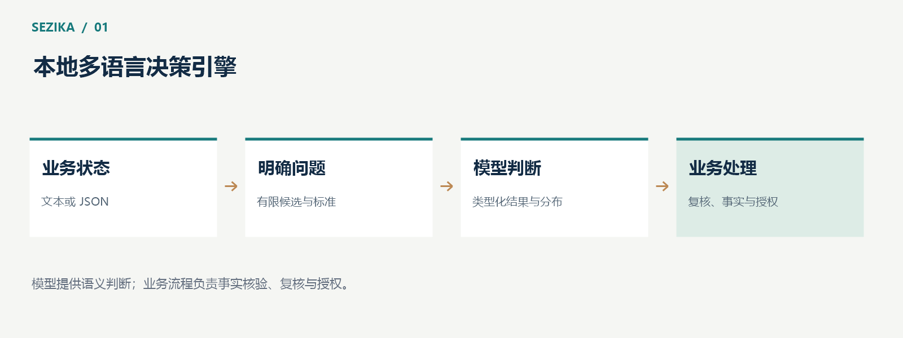

Sezika 是一个用 C# 开发的本地多语言决策引擎。它接收文本或 JSON 状态，在给定的问题和候选范围内完成判断，返回类型化结果与概率分布。它关心的是“这件事属于哪一类”“更接近哪个等级”“这个命题是否成立”，而不是生成一段开放式回答。
一条客服消息需要分派给账单团队还是技术团队，一条设备告警需要优先处理还是进入观察队列，一份申请材料是否包含指定信息——这些问题往往都有明确的输出范围。应用希望得到一个可检查、可记录、可参与后续流程的结果。
文本里的表达却很难穷举。用户可以说“又扣了一次钱”，也可以说“这张账单为什么重复收费”；同一个意图可能出现在中文、英文或混合表达中。语义模型的作用，是在这些不同表述之间建立联系。
Sezika 把这类需求组织为结构化决策：调用方提供状态、问题和判定标准，模型比较候选，应用再依据自己的权限与业务政策使用结果。输入和输出都有明确边界，便于集成到现有软件中。
自回归语言模型通过逐个生成 token 组织回答。Sezika 采用编码器与决策头的路线：先理解输入序列，再对候选位置进行评分，最后得到分布。
这一方式适合有限候选选择、等级评分和真假判断。应用可以直接读取类别标识、等级分布或真假概率，无需从自然语言回答中提取结论。它也减少了对自由文本格式的依赖。
“非自回归”描述的是计算方式，并不自动保证某个延迟或吞吐。实际开销仍取决于模型规模、输入长度、问题数量、硬件和数据搬运。尤其是多个问题分别构造序列时，工作量仍会随问题数量增长。

Sezika 提供三种基本表达方式。
| 原语 | 适合的问题 | 主要结果 |
| Choice | 在有限候选中选择 | 候选标识和完整概率分布 |
| Score | 按有序标准评估程度 | 等级分布与概率加权得分 |
| Boolean | 判断一个命题 | 命题成立的概率 |
例如，在客服分派中，Choice 可以比较“账单问题”“技术故障”和“其他”；Score 可以评估影响程度；Boolean 可以判断“消息是否涉及重复收费”。这些问题可以共享业务状态，但各自保留明确的判定标准。
三种原语的共同价值是让语义判断进入类型化接口。调用方能够保存完整分布，观察不同候选之间的差异，并为模糊输入设计人工复核路径。
Sezika 的模型计算、CPU/GPU 算子和调度都使用 C# 实现，技术基础是 .NET 10，推理部署面向 Native AOT。CUDA 路径通过静态 C# 驱动绑定执行构建期生成的 GPU 产物。
本地运行让应用可以在自己的环境中管理模型、输入和计算资源。核心推理无需把业务文本发送给远程模型服务，也不依赖 PyTorch、ONNX Runtime 或 cuBLAS/cuDNN 承担数值计算。
这是一条强调可检查性与部署控制的工程路线。它同时意味着项目需要自己承担算子正确性、资源生命周期和性能优化的工作。采用 C# 本身不能替代这些验证。
模型可能判断一条消息属于退款意图，但退款是否可以执行，仍然需要检查订单、身份、金额和业务授权。设备告警被模型评为高优先级，也不意味着可以直接停止生产设备。
Sezika 的核心保持独立，不内置业务动作执行器。概率是模型输出的一部分，不能充当操作许可。应用应结合明确规则、真实业务证据和人工复核使用判断结果。
截至 2026 年 10 月 13 日，项目已具备本地推理、三类决策与真实 C# GPU 训练基础；完整训练暂缓，正式多语言质量与概率校准仍待完成。现阶段更适合研究、验证和受控试点，而正式应用需要依据具体模型与任务取得独立评测结果。
项目采用 Apache License 2.0 管理自有代码；模型、tokenizer 和数据的许可分别管理。项目介绍、文档与当前进度可在 Sezika 项目主页查看。